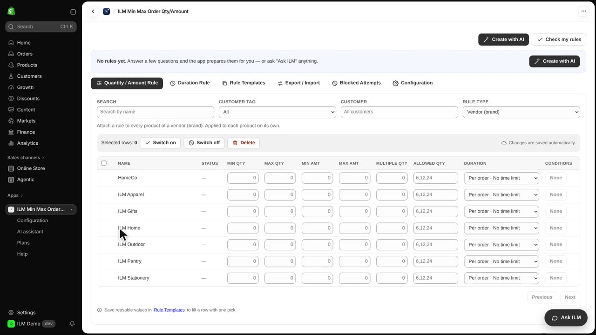
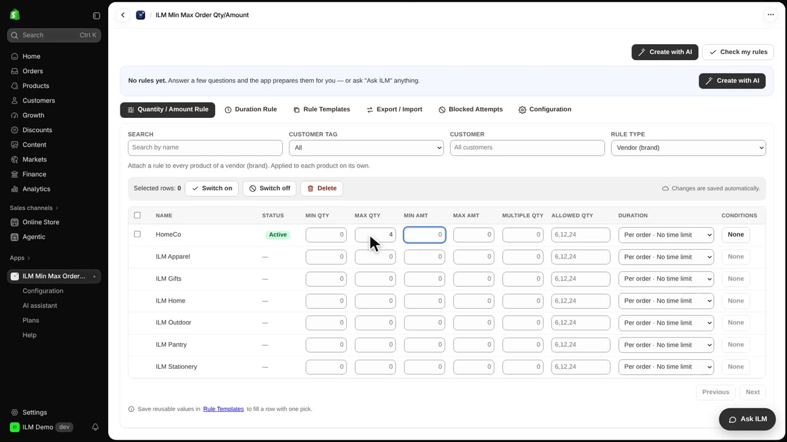
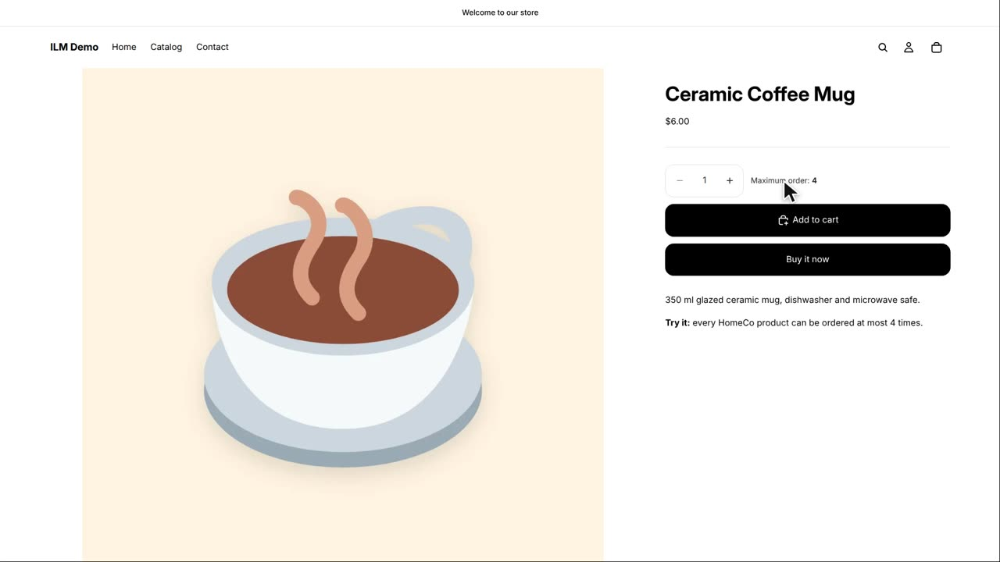
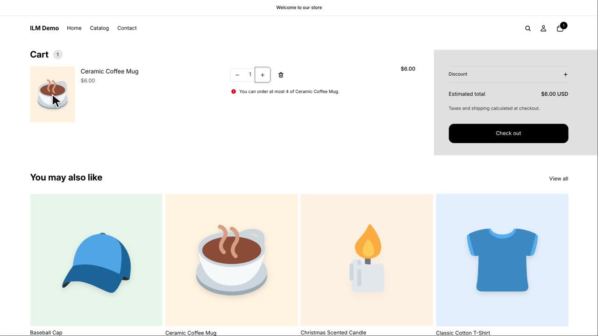

Vendor rules let you set one quantity limit for every product that belongs to the same brand, without editing each product one by one. This is perfect when a supplier or brand has a packaging or shipping limit you must respect across their whole catalog. In today's example, every product from the vendor HomeCo will be capped at four units per order. We will set the rule once and then check it on a product page and in the cart.
First, change the Rule Type to Vendor (brand). The table below now lists every vendor in your store, each with its own row, so you can apply limits brand by brand.

Next, type four in the Max Qty field for the HomeCo row. That means any single order can contain at most four units of any HomeCo product.

Now we open the product page for the Ceramic Coffee Mug, which is made by HomeCo. The page shows the maximum of four, so the shopper knows the limit before adding to cart. This message comes from the vendor rule, not from a product-specific rule.

Finally, in the cart we try to buy five Ceramic Coffee Mugs. The cart refuses the quantity of five because it exceeds the HomeCo maximum of four. The shopper sees the limit enforced at checkout, and the order cannot proceed until the quantity is reduced.
